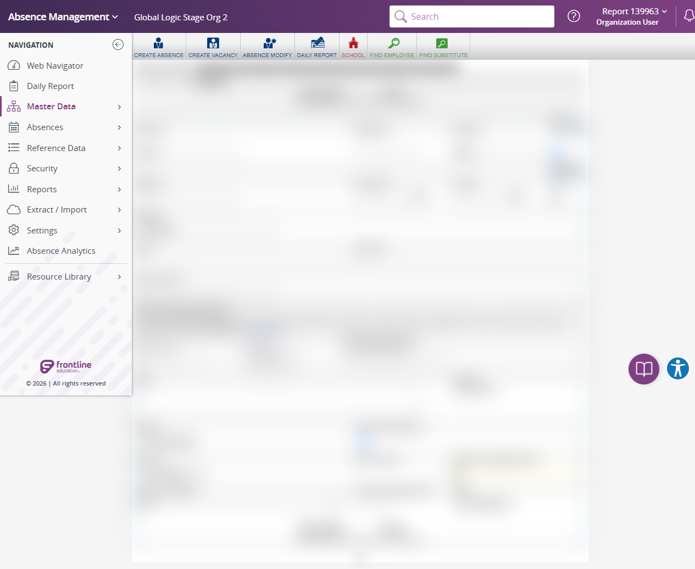
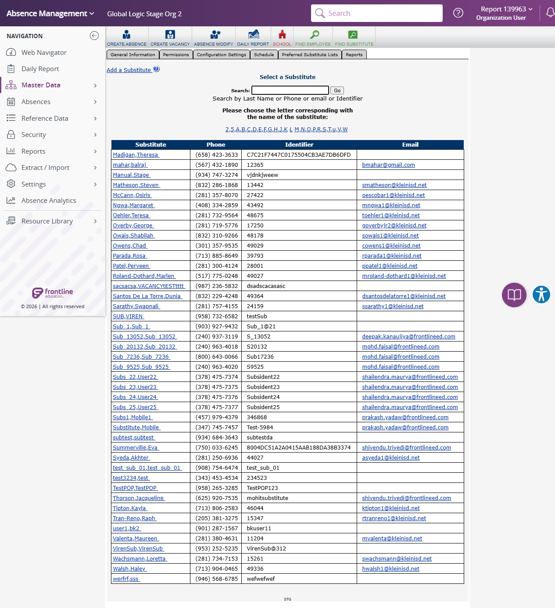

Execution 14 · Angular Daily Report to Substitute General Information
tests/navigation/angular-daily-report-to-substitute-general-information.md · Video 14:33–16:51
14
Execution
14:33–16:51
Continuous-video range
Unattended safe mode
Execution mode
Scenario outcome
Daily Report to Substitute General Information navigation, three collision searches, runtime phone/PIN format validation, unsaved form preparation, and both alphabet groups passed. No clearly synthetic A-search result was available for safe read-only inspection, and creation, deletion, impersonation, and Time and Attendance branches were not tested in unattended safe mode.
Continuous video evidence
Screenshot evidence
{kind=link}

{kind=link}

Complete test structure
Source: tests/navigation/angular-daily-report-to-substitute-general-information.md
# Angular Daily Report to Substitute General Information
## Execution directive
Before any browser action, read:
1. `instructions/project-instructions.md`
2. `instructions/application-details.md`
3. `instructions/test-data.md`
Execute this scenario directly in Chrome using browser automation. Do not generate test code. Save the execution report under `reports/`.
When executed by `instructions/full-suite-headed-video-execution.md`, follow the coordinator's selected execution mode. Unattended safe mode performs no persistent creation or deletion and marks dependent steps **NOT TESTED**. Full destructive mode performs only the documented synthetic lifecycle; permanent browser deletion may still require narrow action-time confirmation. Do not bypass that safeguard or ask unrelated ready/password questions.
Reuse the same authenticated Chrome browser session and the same controlled tab throughout the scenario whenever they remain available. Do not create a new browser session or tab between scenario steps. If AES closes, releases, or disconnects the controlled tab after a JavaScript confirmation dialog or authentication transition, reconnect to the existing Chrome session first and claim the matching open AES tab when possible. Create a replacement tab only when no matching AES tab remains, then reverify the exact record and current state before continuing.
## Objective
Verify that an authenticated AES Stage organization user can navigate from the Angular Daily Report page to the React Substitute General Information entry page, remove a clearly synthetic Substitute under the current-run authorization, check for and clean up an existing `sumit4455` test record, create a new Substitute, impersonate the created user successfully, exit impersonation, verify the created user's Time and Attendance links, and remove the created test Substitute.
## Preconditions
- Chrome is available through the approved browser-control connection.
- The user is authenticated in AES Stage.
- The Angular Daily Report page is open.
- Generate a fresh synthetic phone number and PIN in memory immediately before completing the Add Substitute form. The phone number must be exactly 10 digits with a first digit from `2` through `9`; the PIN must be exactly 5 digits with a first digit from `1` through `9`. Do not persist either generated value in configuration or credential files.
- Work only in the AES staging environment.
- Use only a clearly synthetic Substitute returned by the documented search. Do not select or remove a realistic-looking person.
- If no clearly synthetic result is available, stop with a **BLOCKED** result.
- Before creating the Substitute, check for the record using all three searches: exact identifier `sumit4455`, last name `Codex`, and first name `sumit`. A single `No Records Found` result is not sufficient. If any search returns a candidate, open it and verify that it is the exact synthetic `sumit Codex` record with identifier `sumit4455`; remove it under the current run's authorization and confirm absence using all three searches before creating a new record. If a candidate is not clearly the expected synthetic test record, stop with a **BLOCKED** result.
## Steps
1. Confirm the Angular Daily Report page is open.
- Expected: The URL is `https://adminwebstage2.flqa.net/reports/absence/daily-report`.
- Expected: The page title is `Aesop - Daily Report`.
- Expected: A level-one **Daily Report** heading is visible.
2. Select **Master Data** from the navigation menu.
- Expected: The Master Data submenu displays **Substitute**.
3. Select **Substitute**.
- Expected: The Substitute submenu displays **General Information**.
4. Select **General Information**.
- Expected: The browser transitions from the Angular application to the React AES Stage application.
5. Verify the Substitute General Information entry page.
- Expected: The host is `aesstage.flqa.net`.
- Expected: The URL contains `/navigator/sub_select.asp` and targets `/navigator/sub_general.asp` through the `surl` parameter.
- Expected: The page title is `Substitutes | Select a Substitute (139963)`.
- Expected: **General Information**, **Add a Substitute**, and the Substitute search control are visible.
- Expected: No application error is displayed.
6. Enter `A` in the Substitute search control and select **Go**.
- Expected: Matching Substitute results are displayed.
7. Select the first result whose name is clearly synthetic, such as a name containing `Auto`, `Autotest`, `Test`, or a synthetic identifier pattern.
- Expected: The selected Substitute General Information page is displayed.
- Expected: A numeric Substitute ID is present in the URL.
- Expected: The displayed name and identifier match the selected search result.
- Expected: The **Remove** control is visible.
- Safety: Do not select a realistic-looking person. If the result's synthetic nature is uncertain, stop with a **BLOCKED** result.
8. Record and reverify the selected Substitute name, Substitute ID, and identifier immediately before deletion.
- Expected: The exact synthetic target is verified before any deletion action.
- Authorization: In full destructive mode, follow the coordinator's action-time confirmation requirement. In unattended safe mode, do not delete and mark this branch **NOT TESTED**.
9. After authorization, select **Remove** and accept the application's deletion confirmation.
- Expected: AES displays `This Substitute has been deleted.` or an equivalent deletion confirmation.
10. Open Substitute search and search for the deleted record's exact identifier.
- Expected: The deleted Substitute ID is absent from the results.
- Expected: `No Records Found` is displayed when no other record matches the exact identifier.
11. Determine whether the test Substitute already exists by performing each of these searches separately: exact identifier `sumit4455`, last name `Codex`, and first name `sumit`.
- Expected path A: All three searches display `No Records Found`; continue to creation.
- Expected path B: Any search displays a candidate; open it and verify all of the following before cleanup:
- First Name is `sumit`.
- Last Name is `Codex`.
- Identifier is exactly `sumit4455`.
- A numeric Substitute ID is present.
- The **Remove** control is visible.
- Safety: If any matching record is not clearly this expected synthetic test record, do not remove it and stop with a **BLOCKED** result.
12. If the exact synthetic `sumit Codex` record exists in any of the three searches, record its name, Substitute ID, and identifier, then remove it under the current run's authorization.
- Expected: AES displays `This Substitute has been deleted.` or an equivalent confirmation.
- Expected: New searches for `sumit4455`, `Codex`, and `sumit` each display `No Records Found`, and the removed Substitute ID is absent.
- If no matching record existed in step 11, skip this cleanup step.
13. Select **Add a Substitute** and enter the following data:
- First Name: `sumit`
- Last Name: `Codex`
- Identifier: `sumit4455`
- Phone Number: generate a random 10-digit number at runtime whose first digit is `2` through `9`.
- Phone PIN: generate a separate random 5-digit number at runtime whose first digit is `1` through `9`.
- Keep both generated values only in execution memory for the duration of this scenario. Do not write either value to a configuration file, credentials file, screenshot annotation, video filename, or report.
- Expected: All required fields pass validation and **Apply Changes** is available.
14. Record and reverify the intended creation target immediately before selecting **Apply Changes**.
- Expected: The exact creation target is verified before submission.
- Authorization: Submit only in full destructive mode. In unattended safe mode, do not create the record and mark persistence-dependent checks **NOT TESTED**.
15. After authorization, select **Apply Changes**.
- Expected: The Substitute General Information page opens for `sumit Codex`.
- Expected: The page shows identifier `sumit4455`, the requested phone number, an active status, a numeric Substitute ID, and **Log in as User**.
16. Select **Log in as User**.
- Expected: The Substitute Home page opens on `aessubstage.flqa.net`.
- Expected: The page displays `VIEWING AS SUMIT CODEX`.
17. Verify the impersonation exit control.
- Expected: An element matching `.sk--impersonation-exit.fa-li-close` is present and visible.
18. Select the impersonation exit control.
- Expected: Impersonation closes and the browser returns to the AES Stage administrator session.
- Expected: The created Substitute General Information page is displayed for the same Substitute ID.
19. After returning from impersonation, select **Log in to Time and Attendance as User** and validate the destination page.
- Expected: **Log in to Time and Attendance as User** is visible and enabled.
- Expected: Its destination contains `productId=VT` and `userKey=3-<created Substitute ID>`.
- Expected: The `vtstage.flqa.net` Time & Attendance page opens successfully with title **Time & Attendance** and no application or access error.
- Expected: The impersonated Time and Attendance session is established for the created Substitute context.
20. Return to the created Substitute General Information page. Use browser Back when the destination replaced the current tab; close the destination tab when it opened separately.
- Expected: The AES Stage administrator session is restored.
- Expected: The same created Substitute ID, name `sumit Codex`, and identifier `sumit4455` are displayed.
21. Select **Time and Attendance Settings** and validate the destination page.
- Expected: **Time and Attendance Settings** is visible and enabled before selection.
- Expected: Its destination uses the stage Time and Attendance host and contains `UserType=3` and `UserKey=<created Substitute ID>`.
- Expected: The `vtstage.flqa.net` **Users** settings page opens successfully with no application or access error.
- Expected: **View in Aesop Absence Management** references `sub_id=<created Substitute ID>`, confirming the created Substitute context.
22. Return to the created Substitute General Information page. Close the settings tab when it opened separately; otherwise use browser Back.
- Expected: The AES Stage administrator session is restored.
- Expected: The same created Substitute ID, name `sumit Codex`, and identifier `sumit4455` are displayed.
23. Record and reverify the created Substitute name, assigned Substitute ID, and identifier immediately before cleanup deletion.
- Expected: The exact created record is verified before deletion.
- Authorization: In full destructive mode, follow the coordinator's action-time confirmation requirement. In unattended safe mode, do not delete and mark this branch **NOT TESTED**.
- Safety: Reverify the name, Substitute ID, and identifier after exiting impersonation and immediately before deletion.
24. After authorization, select **Remove** and accept the application's deletion confirmation.
- Expected: AES displays `This Substitute has been deleted.` or an equivalent deletion confirmation.
25. Open Substitute search and search for the exact identifier `sumit4455`.
- Expected: The deleted Substitute ID is absent from the results.
- Expected: `No Records Found` is displayed when no other record matches the identifier.
- Alternate cleanup result: If the exact created record is already absent before cleanup deletion, do not attempt deletion; record that no destructive action was necessary and verify its absence by identifier, last name, phone number, and assigned Substitute ID.
26. On the Substitute selection page, select the alphabet-group link **2,5,A,B,C,D,E,F,G,H,J,K**.
- Expected: The URL contains `mode=L` and `key=2,5,A,B,C,D,E,F,G,H,J,K`.
- Expected: The title remains `Substitutes | Select a Substitute (139963)`.
- Expected: **Select a Substitute** and matching Substitute result links are visible, with no application error.
27. Select the alphabet-group link **M,N,O,P,R,S,T,u,V,W**.
- Expected: The URL contains `mode=L` and `key=M,N,O,P,R,S,T,u,V,W`.
- Expected: The title remains `Substitutes | Select a Substitute (139963)`.
- Expected: **Select a Substitute** and matching Substitute result links are visible, with no application error.
## Expected selection behavior
When no Substitute is already selected, AES opens **Select a Substitute** before displaying an individual Substitute General Information record. This is the expected result. For this scenario, use the search value `A` and select only a clearly synthetic result.
## Deletion safety
- Deletion permanently removes the selected staging record. In full destructive mode, follow any action-time confirmation required by the execution surface and identify the exact Substitute name, Substitute ID, and identifier.
- In unattended safe mode, do not select Remove or accept a deletion dialog.
- Reverify the exact target after any browser interruption or reconnection.
- Never remove a realistic-looking person or a record whose synthetic status is uncertain.
## Creation safety
- Creation is a persistent staging-data change and runs only in full destructive mode.
- Verify that searches for `sumit4455`, `Codex`, and `sumit` are all clear before opening the creation form.
- Removing the newly created test Substitute follows the full-suite coordinator's action-time confirmation rule. It is not performed in unattended safe mode.
- Do not record the generated Phone Number or Phone PIN in the execution report or any screenshot annotation. Report only that values of the required lengths and formats were generated, entered, and validated.
## Cleanup
In full destructive mode, exit impersonation, remove the newly created test Substitute after any required action-time confirmation, and verify that its exact identifier and assigned Substitute ID are absent. In unattended safe mode, no record is created or removed and all persistence-dependent checks are NOT TESTED. If a full-destructive record is already absent, record the verified absence and do not perform another destructive action. Verify both documented alphabet-group links and leave the second alphabet-group results page open. Do not sign out when another authenticated scenario will follow.
## Report requirements
Record:
- Start and finish timestamps
- Angular Daily Report URL, title, and heading verification result
- Master Data, Substitute, and General Information navigation results
- React Substitute selection-page URL, title, and visible-control verification results
- Search value and search-result status
- Selected synthetic Substitute name, Substitute ID, and identifier
- Pre-delete target verification and authorization result
- Application deletion confirmation
- Post-delete identifier search and exact Substitute ID absence
- Pre-creation collision checks for identifier `sumit4455`, last name `Codex`, and first name `sumit`
- Existing-test-record branch result, including exact target verification, cleanup deletion confirmation, and post-cleanup absence when applicable
- Creation target and authorization result
- Created Substitute name, identifier, assigned Substitute ID, active status, and visible-control verification
- Substitute Home URL and `VIEWING AS SUMIT CODEX` verification
- Impersonation exit-control visibility and successful return to the administrator session
- **Log in to Time and Attendance as User** link selection, destination page validation, and successful return to the same Substitute
- **Time and Attendance Settings** link selection, settings-page validation, and successful return to the same Substitute
- Pre-cleanup target verification and authorization result
- Application confirmation for deletion of the created test Substitute, or evidence that it was already absent
- Final exact-identifier search and assigned Substitute ID absence
- `2,5,A,B,C,D,E,F,G,H,J,K` link URL, title, visible results, and error check
- `M,N,O,P,R,S,T,u,V,W` link URL, title, visible results, and error check
- Overall status: PASS, FAIL, or BLOCKED
- Any safe error details
Never record passwords, generated Phone Numbers, Phone PINs, tokens, cookies, or browser-session information.
Safety and cleanup
No password, token, cookie, or authentication fragment is included. Unattended safe mode did not create, update, or delete persistent staging records.